프로그램 주소(https://musicalpe.github.io/jumprope/)를 열면 나오는 연결 화면에서 견본 시트 사본 만들기를 누르거나 아래 견본 링크를 열고 사본 만들기를 누릅니다. 껍데기 코드가 들어 있는 빈 시트가 선생님 드라이브에 생겨요. 왼쪽 위 파일 이름 줄넘기 기록 관리(견본)의 사본 을 눌러 6학년 1반 줄넘기처럼 우리 반 이름으로 바꿔 주세요.
https://docs.google.com/spreadsheets/d/1ItPU6WU1-buXQ_Cb9yRYjUz81IYXISoq3ul3_ht-4h0/copy
사본에서 메뉴 확장 프로그램 → Apps Script → 오른쪽 위 배포 → 새 배포 → 톱니바퀴에서 유형 웹 앱
다음 사용자로 실행: 나
액세스 권한: 모든 사용자
배포 → 권한 허용. "Google에서 확인하지 않은 앱" 경고가 나오면 고급 → (프로젝트 이름)(으)로 이동(안전하지 않음) → 허용.
선생님 드라이브의 시트에서 선생님 계정으로 실행되는 코드라 나오는 안내입니다.
나온 웹 앱 주소(…/exec 로 끝남)를 브라우저로 열면 아래 "설치 확인" 화면이 뜹니다. 프로그램 열기 → 를 누르세요.
열린 프로그램 주소를 즐겨찾기에 넣으면 설치 끝! 관리자 비밀번호는 처음에 1234 입니다.
방법 B — 직접 붙여넣기
구글 드라이브에서 새 스프레드시트를 만들고 확장 프로그램 → Apps Script 를 엽니다.
왼쪽 Code.gs 의 내용을 전부 지우고, Shell(껍데기).txt 내용을 붙여넣은 뒤 저장(Ctrl+S)합니다.
방법 A 의 2~5번과 같이 배포합니다.
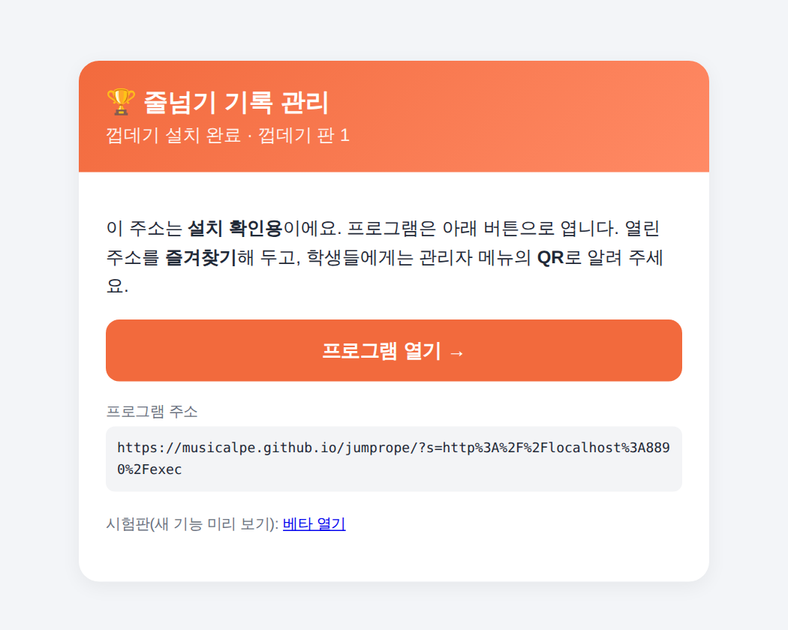
웹 앱 주소를 열면 나오는 설치 확인 화면
액세스 권한이 "모든 사용자"가 아니면 학생 휴대폰에서 "학교 시트에 연결하지 못했어요"가 뜹니다. 학생들은 구글 로그인 없이 들어옵니다.
3. 첫 설정 — 비밀번호 · 학생 등록 · QR
메인 화면 오른쪽 위 관리자 메뉴 → 비밀번호 1234 로 들어갑니다.
① 관리자 비밀번호 바꾸기
비밀번호 · 초기화 탭에서 바로 바꿔 주세요.
② 학생 등록 — 엑셀에서 붙여넣기
학생 등록 탭에 엑셀·구글시트의 학년 · 반 · 번호 · 이름 네 칸(다섯째 칸에 학생 비밀번호, 선택)을 복사해 붙여넣고, 아래 미리보기를 확인한 뒤 등록.
학생 비밀번호를 비워 두면 1234 로 등록됩니다. (학생이 자기 기록 페이지를 볼 때 사용)
제목 줄이 섞여 있거나 이미 등록된 학생은 자동으로 건너뜁니다.
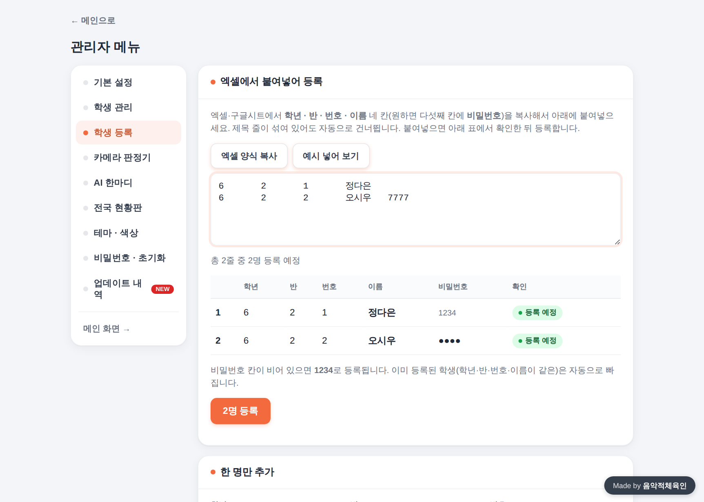
학생 등록 — 붙여넣으면 아래 표에서 확인
③ 기본 설정 — QR · 하루 목표 · 줄넘기 종류 · 승인 절차
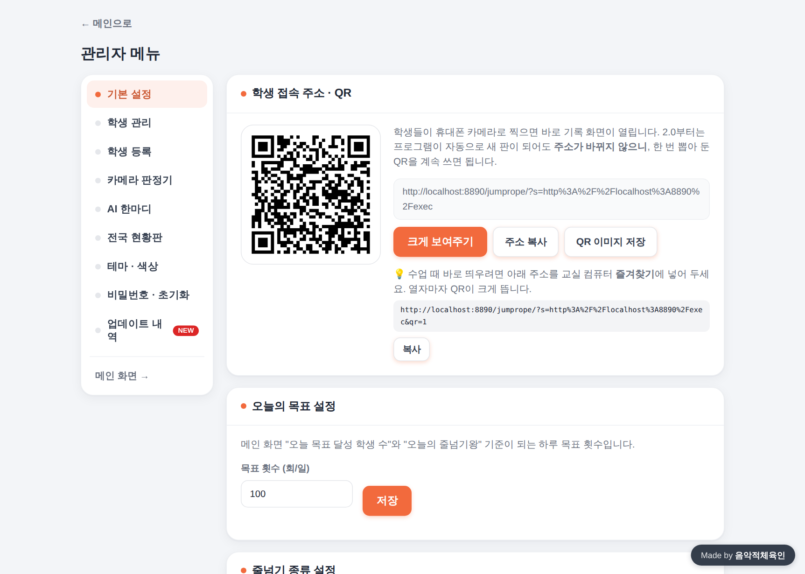
기본 설정 탭의 학생 접속 QR
학생 접속 QR: 크게 보여주기 / 주소 복사 / 이미지 저장. 프로그램이 새 판이 되어도 QR은 그대로 쓰면 됩니다.
즐겨찾기용 주소(끝이 &qr=1): 교실 컴퓨터에 넣어 두면 열자마자 QR이 크게 뜹니다.
오늘의 목표: "오늘 목표 달성 학생 수" 기준 (기본 100회)
줄넘기 종류: 한 줄에 하나씩 (모아뛰기, 엇갈아뛰기, 이중뛰기 …). 학기 중에는 이름을 바꾸기보다 추가만 하세요.
승인 절차: 켜면 학생 입력 → 선생님 승인 후 반영. 새로 설치하면 기본 켜짐이고, 끄면 저장 즉시 반영됩니다. 전국 현황판에 참여하려면 켜져 있어야 해요.
4. 수업에서 쓰기
학생
QR을 찍어 들어옵니다.
학년 → 반 → 이름 → 줄넘기 종류를 고르고 뛴 횟수를 넣고 저장.
여러 번 뛰었으면 그때마다 넣으면 그날 횟수가 모두 더해집니다.
이 기기에 내 이름 기억하기를 켜면 다음부터 QR만 찍어도 학년·반·이름(·종류)이 골라진 채로 열려요. 내 휴대폰·우리 집 컴퓨터처럼 혼자 쓰는 기기에서만 켜요(처음엔 꺼져 있어요).
그래프의 자기 이름 막대를 누르고 비밀번호를 넣으면 날짜별 기록을 볼 수 있어요.
선생님
메인 화면: 이번주·오늘의 줄넘기왕, 연속 기록 1위(공동 1위는 모두 표시), 학생별 누적 그래프(종류별로 쌓아서 / 한 종류만, 학년·반별로 골라 보기, 막대 위에 합계 횟수). 그래프 제목 학생별 누적 줄넘기 기록(표로 보기)을 누르면 이름과 횟수가 표로 떠요.
기록 승인: 누르는 즉시 반영, 여러 건은 모두 승인 버튼으로 한 번에
학생 관리 탭: 학생별 기록 고치기·삭제, 명단 순서 바꾸기
테마 · 색상, AI 한마디(Gemini 키를 넣으면 매일 새 응원 문구)
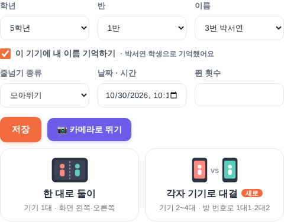
기록 입력 — 이름 기억하기 · 한 대로 둘이 · 각자 기기로 대결
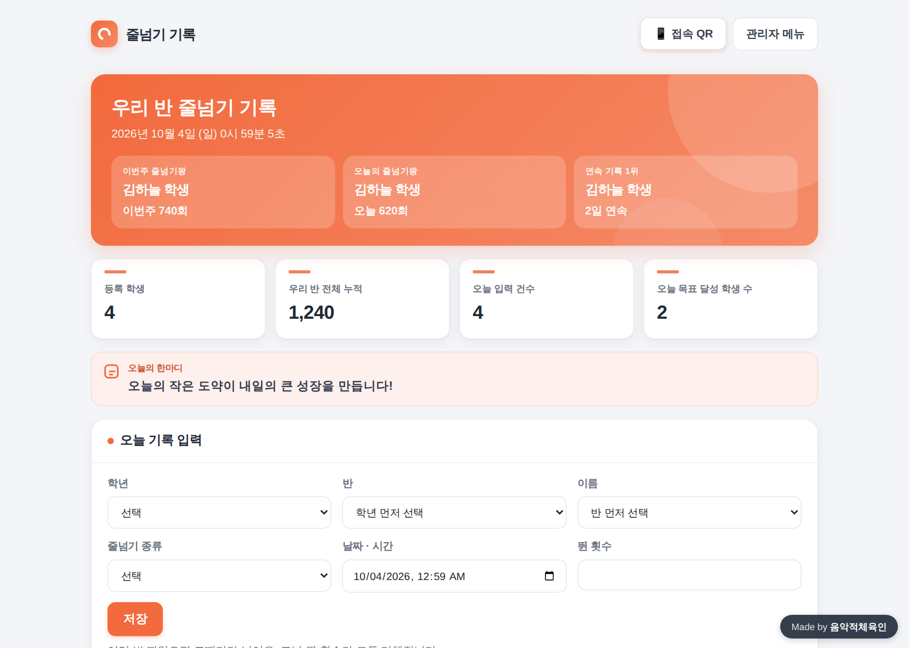
메인 화면 (교실 TV에 띄워 두기 좋아요)
📷 카메라 판정기 (선택)
카메라 판정기 탭에서 켜면 입력 폼에 📷 카메라로 뛰기 버튼이 생깁니다. 태블릿·노트북·휴대폰 카메라가 실제로 뛴 횟수를 세고, "끝내고 기록하기"를 누르면 자동으로 기록됩니다. 카메라 기록은 📷 표시가 붙고, 전국 현황판에서도 "카메라 인증" 횟수로 따로 보여요. 카메라가 센 기록은 승인 없이 바로 반영됩니다(설정에서 승인 대기로 바꿀 수 있음).
스마트 줄넘기로 뛰기 (선택)
스마트 줄넘기(JUMPITNOW)를 학생 휴대폰에 블루투스로 연결해 뛴 횟수와 시간을 그대로 기록합니다. 카메라 판정기 탭에서 켜면 입력 폼에 스마트 줄넘기로 뛰기 버튼이 생겨요(안드로이드·크롬북·PC 크롬). 이 기록은 선생님 승인을 거칩니다.
카메라 판정기나 스마트 줄넘기로 뛰면 걸리지 않고 이어 뛴 가장 많은 수, 한 번에 최고 연속도 함께 기록돼요(껍데기 5판부터). 전국 현황판에도 최고 연속 순위가 따로 있어요. 연속 기록은 카메라와 스마트 줄넘기로만 들어가고, 손으로 넣는 칸에는 없어요.
친구와 함께 — 한 대로 둘이 · 각자 기기로 대결
버튼
이럴 때
한 대로 둘이 기기 1대 · 화면 왼쪽·오른쪽
태블릿·노트북 한 대 앞에 두 친구가 나란히 서서 뛰어요. 나를 고른 뒤 같이 뛸 친구(오른쪽)를 고르고 다시 누르면 판정기가 2인 모드로 열려요. 끝나면 누가 이겼는지 보여 주고 둘 다 기록하기로 두 사람 기록이 각자 들어가요. 화면이 넓은 기기에서만 보여요. (예전 이름 '친구와 둘이')
각자 기기로 대결 기기 2~4대 · 방 번호로
나와 친구가 각자 자기 기기로 판정기를 켜고 겨뤄요. 누르면 판정기가 방 만들기 · 들어가기 창을 띄운 채로 열려요. 자세한 방법은 7장 ④를 보세요. (껍데기 6판부터)
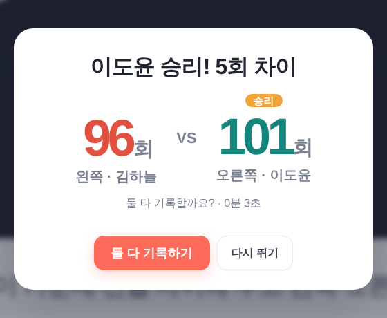
한 대로 둘이 — 끝나면 누가 이겼는지
나와의 대결 — 하루 최고 · 연속 최고 갱신 (껍데기 7판부터)
기록을 저장했을 때 오늘 합계가 지금까지 가장 많이 뛴 날보다 많으면 "축! 하루 최고 기록 갱신!", 카메라 판정기·스마트 줄넘기로 뛰어 걸리지 않고 이어 넘은 수가 내 최고보다 많으면 "축! 연속 넘기 최고 기록 갱신!"이 떠요. 등수가 아니라 지난번의 나와 비교해서, 줄넘기가 서툰 친구도 축하받을 수 있어요.
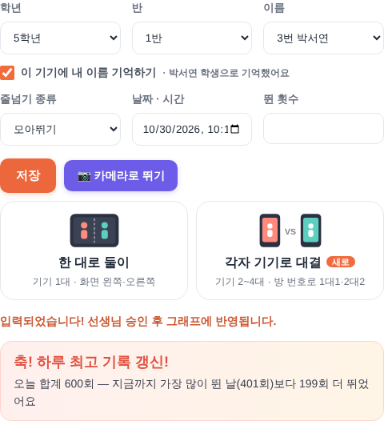
저장하면 뜨는 하루 최고 기록 갱신 축하
5. 전국 현황판 · Jumpers! 기록실
참여를 켜면 우리 학교 기록이 전국 현황판에 모여 다른 학교와 한 달 단위로 순위를 겨룹니다. 매달 1일에 새로 시작하고, 지난 달 1~3등은 Jumpers! 기록실에 남습니다(최근 12개월). 참여는 기본 꺼짐이에요.
켜는 방법
관리자 메뉴 → 전국 현황판 탭
전국 현황판에 참여하기 체크 → 학교 이름·담당 교사 입력(필수), 연락처는 선택
현황판에 학교 이름을 보이게 하려면 현황판에 학교 이름 공개도 체크 (끄면 "익명 학교 ABCD")
승인 절차가 꺼져 있으면 참여를 켤 때 함께 켜집니다. 현황판에는 선생님이 승인한 기록과 카메라 기록만 올라가요.
저장 → 이번 달·지난 달 기록이 바로 보내지고, 아래에 "현황판에 보이는 모습"이 나옵니다.
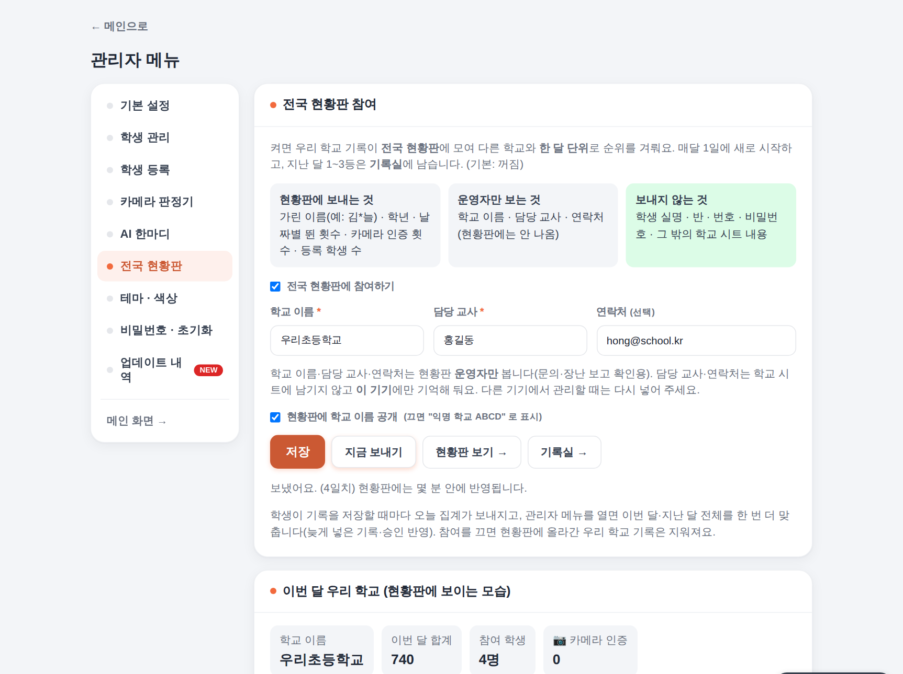
관리자 메뉴 → 전국 현황판 탭
무엇이 보내지나요?
현황판에 보내는 것
운영자만 보는 것
보내지 않는 것
가린 이름(예: 김*늘) · 학년 · 날짜별 뛴 횟수 · 카메라 인증 횟수 · 등록 학생 수 · (공개를 켰을 때만) 학교 이름
학교 이름 · 담당 교사 · 연락처 (문의·장난 보고 확인용, 현황판에는 안 나옴)
학생 실명 · 반 · 번호 · 비밀번호 · 그 밖의 학교 시트 내용
같은 학교의 여러 반이 각자 참여해도 학교 이름이 같으면 현황판에서 한 학교로 합쳐져요. 학교 이름은 지역 두 글자 + 학교 이름으로 써 주세요(예: 서울 햇살초등학교). 반마다 견본 사본(또는 새 스프레드시트)에 따로 설치하고, 다른 반이 쓰던 시트를 복사하지 마세요. 복사한 시트는 프로그램이 알아채고 "새 참여 번호로 바꾸기"를 안내해요.
참여 중에 승인 절차를 끄면 전국 현황판 참여도 함께 꺼집니다(현황판의 우리 학교 기록 삭제).
승인 화면에서 승인한 기록은 바로 현황판에도 반영됩니다.
담당 교사·연락처는 학교 시트에 남기지 않고 그 관리자 기기에만 기억합니다. 다른 기기에서 관리할 때는 다시 넣어 주세요.
참여를 끄면 현황판에 올라간 우리 학교 기록은 지워집니다.
학생이 기록을 저장할 때마다 오늘 집계가 보내지고, 관리자 메뉴를 열면 이번 달·지난 달 전체를 한 번 더 맞춥니다(늦게 넣은 기록·승인 반영).
현황판 보기
참여 중이면 메인 화면 위에 🏆 전국 현황판 버튼이 생깁니다. 우리 학교 줄이 색으로 표시되고, 학교 줄을 누르면 그 학교 안 학생 순위가 펼쳐집니다.
합계 순위와 함께 1인당 평균(합계 ÷ 등록 학생 수)·참여율(한 번이라도 뛴 학생 ÷ 등록 학생 수) 순위로 바꿔 볼 수 있어 작은 학교도 공정하게 겨룹니다. (두 순위는 등록 학생 5명 이상 학교만)
전국 학생 순위 TOP 30, 지난 달 현황판도 고를 수 있어요.
학년 고르기로 학년별 순위를 볼 수 있어요. 맨 위의 모두 함께 지구 한 바퀴는 참여한 모든 학교가 이번 학년도에 뛴 줄넘기를 1회 = 1m로 더한 거리예요. 학년도마다(3월 1일) 새로 시작하고, 지난 학년도에 함께 뛴 거리도 아래에 보여요.
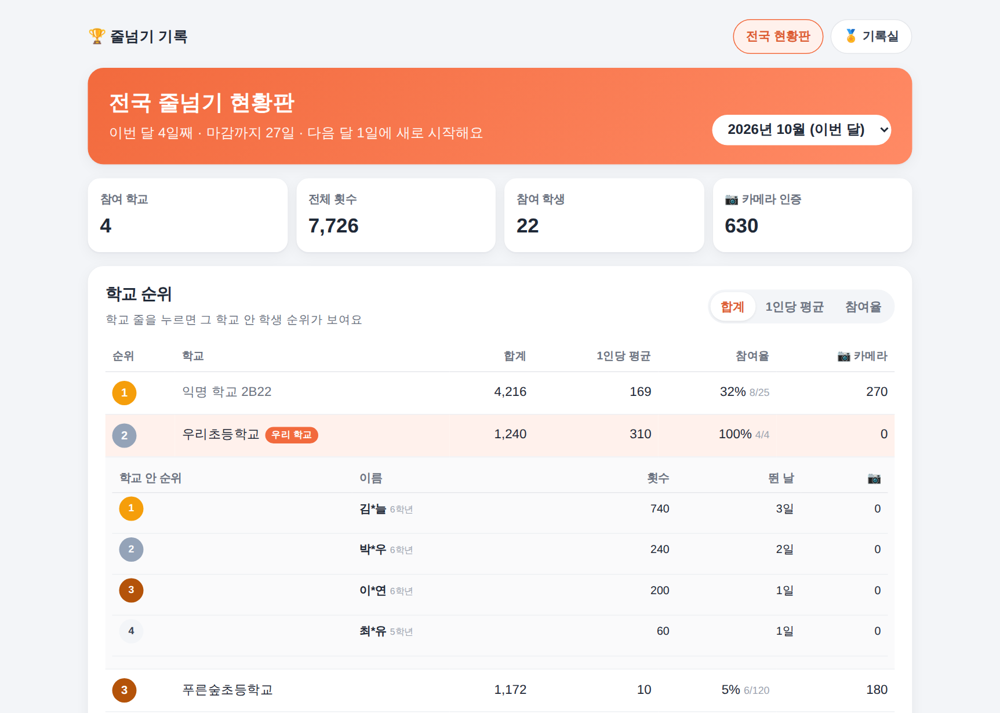
전국 현황판
지난 달 1~3등 월계관 배지
지난 달 1등은 금색, 2등은 은색, 3등은 동색 월계관 배지가 학교·학생 이름 앞에 붙어요. 같은 등수를 여러 번 했으면 가운데에 그 횟수가 들어가고, 배지를 누르면 "2026년 10월 전국 1위"처럼 언제 몇 등이었는지 보여요. 학생 순위, 학교 순위(합계·1인당 평균·참여율), 한 번에 최고 연속, 며칠 연속 뛰었나에 모두 붙어요.
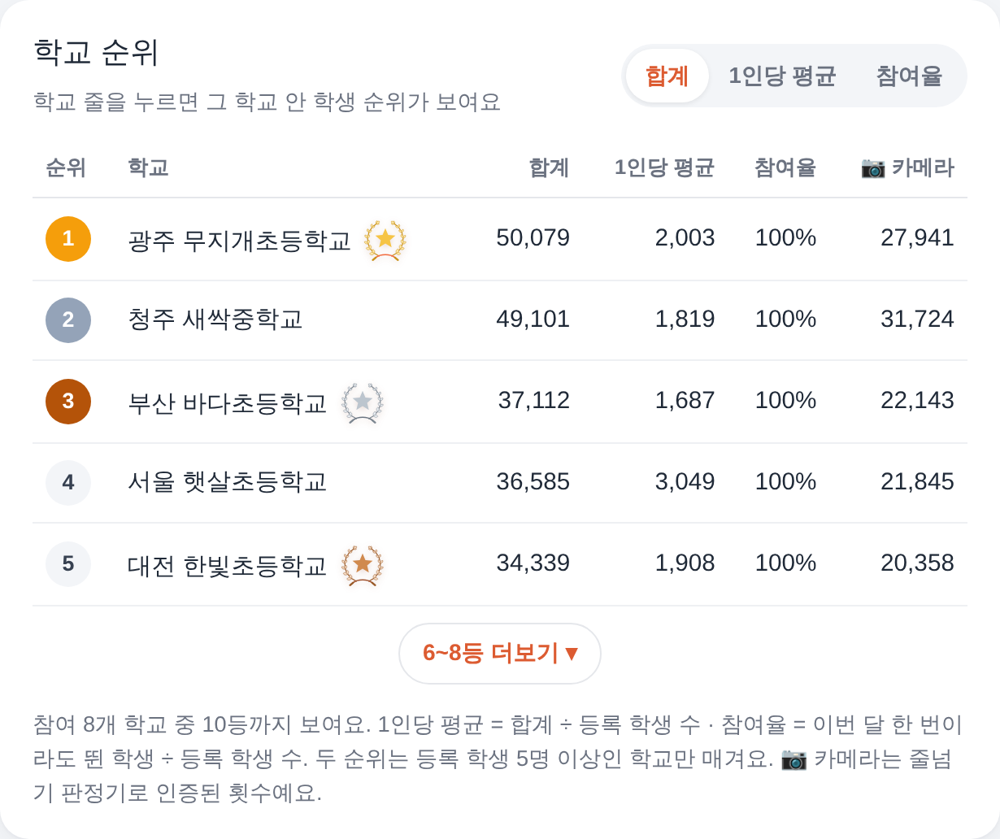
현황판의 월계관 배지
Jumpers! 기록실 보기
현황판 위 Jumpers! 기록실 버튼을 누르면 지난 달 학교·학생 1~3등이 나옵니다. 주황 배너의 달 고르기에서 최근 12개월 중 원하는 달을 고를 수 있어요. 학교별 1~3등도 펼쳐 볼 수 있습니다.
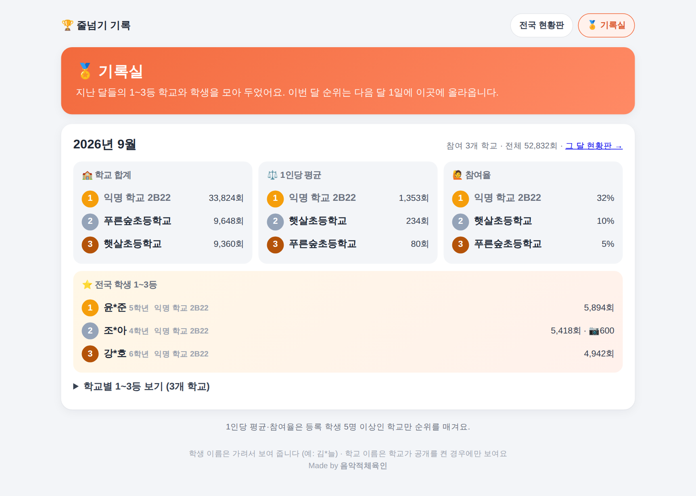
Jumpers! 기록실 — 최근 12개월 중 달을 골라 1~3등 보기
6. 급수 인증 · 인증서 · 국토 대장정
급수 인증은 학교 껍데기 3판 이상이 필요해요. 지금 껍데기는 8판입니다. 이미 쓰고 계시면 Code.gs 에 통째로 다시 붙여 넣고 배포 → 배포 관리 → 수정(연필) → 새 버전으로 배포하세요(주소·학생·기록 그대로). 인증서의 전국 현황판 상장과 국토 대장정은 껍데기와 상관없이 쓸 수 있어요.
급수 인증 (교사 인증)
기본은 한국줄넘기협회 급수표예요: 흰 → 노랑 → 초록 → 파랑 → 밤 → 주황 → 빨강 → 검은 → 와이어. 학생이 선생님 앞에서 걸리지 않고 기준 횟수를 성공하면 선생님이 체크합니다.
관리자 메뉴 → 급수 인증 탭 → 반과 급수를 고릅니다. (반에서 가장 많이 도전 중인 급수가 먼저 골라져 있어요)
통과한 항목을 체크하고 저장. 칸 위의 체크칸을 누르면 그 항목을 반 전체에 한 번에 체크합니다.
한 급수의 항목을 모두 통과하면 다음 급수로 올라가고, "급수가 오른 학생"이 안내됩니다. 앞 급수를 아직 못 딴 학생은 회색으로 잠겨요.
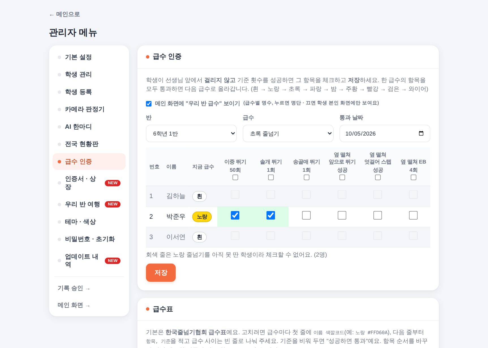
급수 인증 — 노랑 줄넘기를 딴 학생만 초록 줄넘기 체크 가능
급수표 고치기: 같은 탭 아래 "급수표"에서 학교에 맞게 항목·기준을 바꿀 수 있어요. 언제든 협회 기준표로 되돌릴 수 있습니다.
학생 화면: 지금 급수와 다음 도전 항목(통과한 항목은 ✔)이 보여요.
메인 화면: "우리 반 급수"에 급수별 명수가 나오고, 누르면 명단이 펼쳐져요. 보이기 싫으면 급수 인증 탭 맨 위 체크를 끄세요.
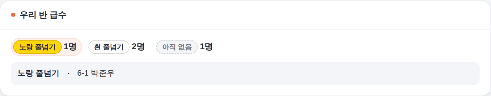
메인 화면의 우리 반 급수 (누르면 명단)
인증서 · 상장 출력
관리자 메뉴 → 인증서 · 상장 탭에서 종류를 고르고 미리 보기 → 인쇄 · PDF 저장. 한 장에 한 명씩 나옵니다.
급수 인증서: 반을 고르면 급수를 딴 학생마다 지금 급수 인증서 한 장씩
전국 현황판 순위 상장: 기록실의 달을 고르면 우리 학교의 전국 순위, 학생 전국 1~3등, 우리 학교 안 1~3등 상장 (현황판에는 가린 이름만 있지만 상장에는 학교 안에서 찾은 실명이 들어가요)
학교 이름·선생님 이름·주는 날짜를 넣고, 직함은 담임 / 체육 교사 / 직접 입력 중에서 고릅니다.
용지 방향: A4 가로(기본) · A4 세로. 세로는 종이 한 장을 꽉 채우게 글자와 월계관을 키워요.
테두리: 금색 줄(기본) · 금박 무늬 · 은박 무늬 · 없음(금박 상장 용지에 인쇄할 때 — 용지 테두리 안쪽으로 여백을 넉넉히 둬요). 금박·은박은 인쇄 창에서 배경 그래픽을 켜 주세요. 고른 테두리는 그 기기에 기억돼요.
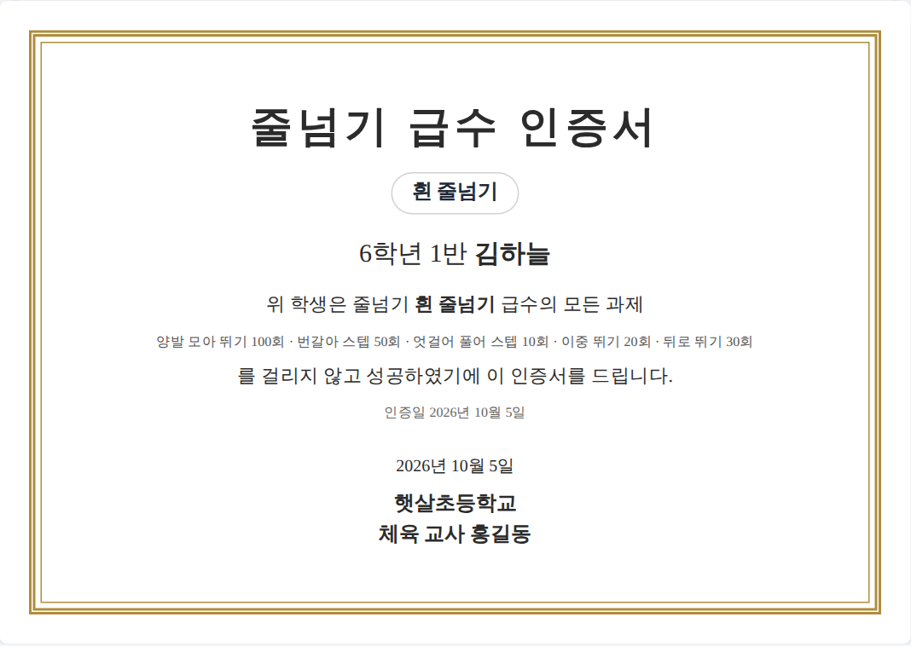
급수 인증서
국토 대장정 (우리 반 줄넘기 여행)
관리자 메뉴 → 우리 반 여행 탭에서 출발 도시를 고르고 "메인 화면에 보이기"를 켜면, 우리 반이 뛴 줄넘기를 1회 = 1m로 바꿔 우리 학교에서 출발해 전국을 한 바퀴 도는 국토 대장정이 메인 화면에 나와요(제주는 배로 건너가요). 지금부터 새로 출발을 누르면 기록은 그대로 두고 여행만 처음부터 다시 시작해요. 전국 현황판의 모두 함께 지구 한 바퀴로 이어집니다.
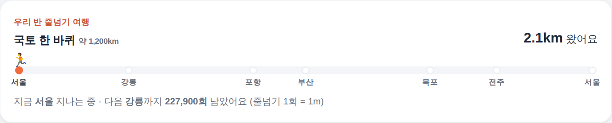
메인 화면의 국토 대장정
7. 점프 Live (Lite) · 각자 기기로 대결 · 나와의 대결
반 전체가 1인 1기기로 카메라 판정기에서 함께 뛰고, 선생님 화면(TV·칠판)에 결과를 모아 보여 주는 수업 방입니다. 바깥 서버 없이 우리 학교 시트만으로 돌아가요. 대신 학생 기기의 숫자가 몇 초씩 늦게 모이기 때문에, 실시간 중계보다는 끝나고 한 번에 결과를 공개하는 방식으로 만들었어요.
학생 설문에서 나온 "횟수는 끝나고 보여 주면 좋겠다"는 아이디어를 그대로 살렸어요. 뛰는 동안 친구들 숫자는 가려지고, 내 화면에는 내 횟수만 보여요.
학교 껍데기 6판부터 쓸 수 있고, 8판을 권해요(7판: 나와의 대결 · 8판: 1대1·2대2 인원 제한). 이미 쓰고 계시면 껍데기를 다시 붙여 넣고 배포 → 배포 관리 → 수정 → 새 버전으로 배포하세요. 각자 기기로 대결(학생 방)은 카메라 판정기 사용도 켜져 있어야 해요.
① 수업 방 열기 (선생님)
관리자 메뉴 → 점프 Live 탭 → 점프 Live (Lite) 열기. 새 창이 열립니다(팝업이 막히면 주소창 오른쪽에서 허용).
함께 수업하는 반(여러 반도 가능)과 줄넘기 종류를 고르고 방 열기. 명단은 이 프로그램에서 가져와요. 명단에서 뺀 번호(전학 등)는 칸을 만들지 않아요.
화면에 뜬 QR을 학생들이 찍어 들어와 자기 번호를 누르고 카메라를 켭니다. 들어온 학생 칸이 밝아져요.
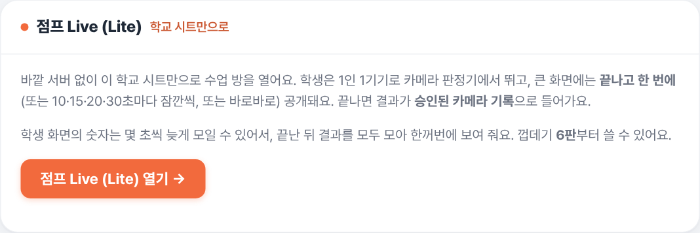
관리자 메뉴 → 점프 Live 탭
② 뛰기 · 공개 방식
목표(30초 · 1분 · 2분 …)와 보이기를 고르고 시작을 누르면 5초 뒤 모두 함께 시작합니다.
보이기
뛰는 동안 큰 화면
끝나고 한 번에 공개 (기본)
이름과 진행 표시만 보이고, 횟수와 순위는 끝난 뒤 한꺼번에
10 · 15 · 20 · 30초마다 공개
평소엔 가려 두었다가 정해진 간격마다 "중간 점검!"으로 3초 동안 횟수 공개
바로바로 보이기
들어오는 대로 보여 줌 (몇 초 늦게 바뀜)
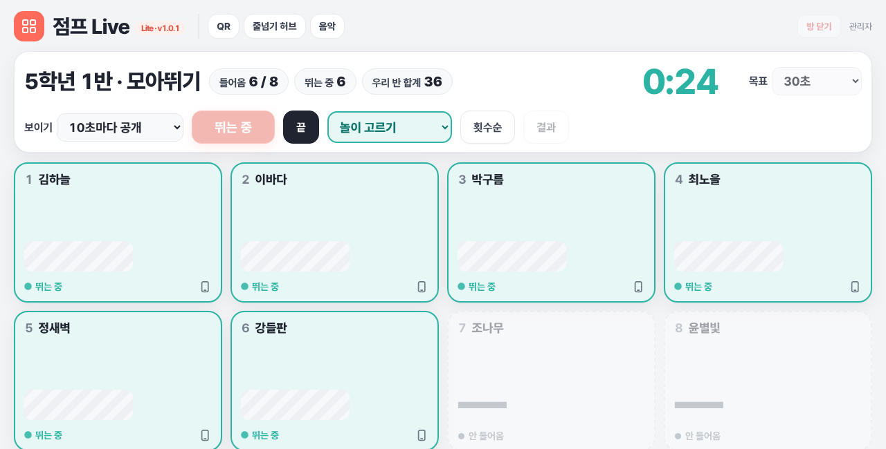
끝나고 한 번에 공개 — 뛰는 동안은 가림
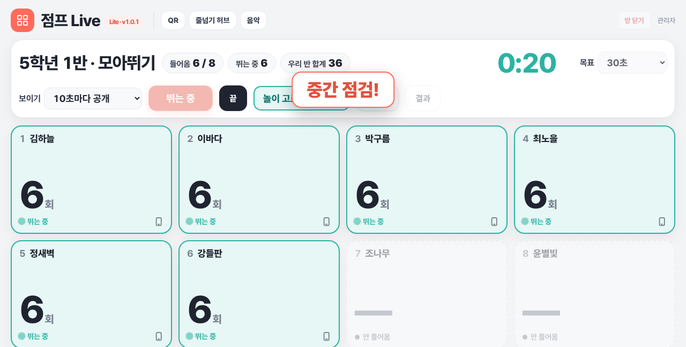
중간 공개 — "중간 점검!" 3초
③ 끝 · 결과 모으기 · 저장
시간이 끝나면 "결과 모으는 중…"이 뜨고 학생 기기의 마지막 횟수를 기다립니다. 모두 들어오거나 더 바뀌는 숫자가 없으면(길어도 20초) 한꺼번에 뒤집히며 결과와 응원 문구가 나와요. 결과는 승인된 카메라 기록으로 학교 시트에 바로 저장되고, 전국 현황판에도 카메라 인증 기록으로 올라갑니다.
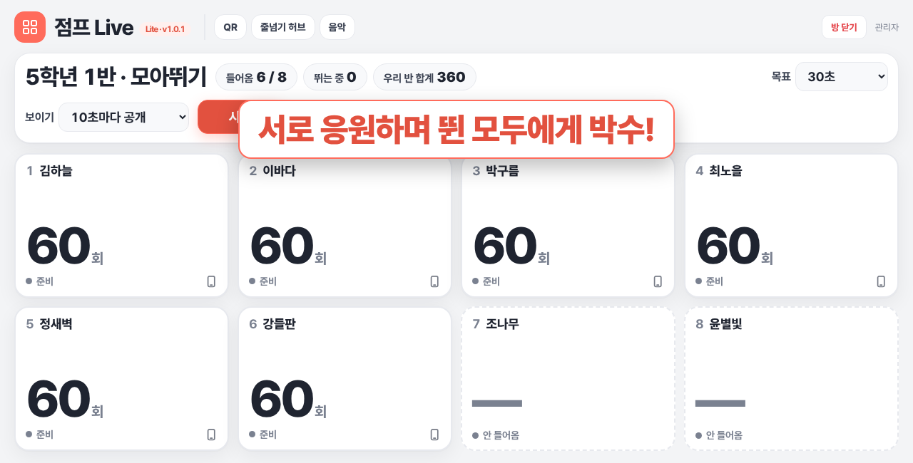
한 번에 공개 — 응원 문구와 함께 결과가 뒤집혀요
나와의 대결 — 내 N분 최고와 비교 (껍데기 7판부터)
1분·2분·3분 판이 끝나면 결과 창에 내 최고와 지난 최고와 비교가 나와요. 지난번 나보다 많이 넘으면 개인 최고! 딱지와 함께 "축! 개인 최고 기록 갱신 ○명!"으로 축하하고, 처음 뛴 친구는 첫 기록으로 축하해요. 같은 시간끼리만 비교해요(1분은 1분끼리). 6판 이하에서는 그 컴퓨터에서 뛴 판끼리만 비교해요.
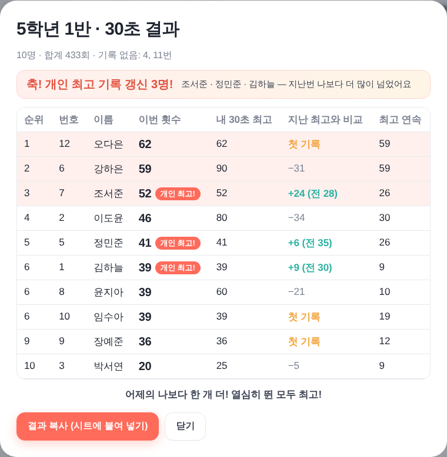
결과 창 — 내 최고, 지난 최고와 비교, 개인 최고 딱지
줄넘기 점검 판 · 멈춘 칸 표시 · 큰 글씨 (점프 Live 1.4)
줄넘기 점검: 위쪽 버튼을 누르면 기록에 들어가지 않는 연습 판이 열려요. 아이들이 제자리에서 세 번 뛰면 잘 세는 칸은 초록, 15초가 지나도 0회인 칸은 빨강 확인, 허브 줄넘기가 대답이 없으면 신호 없음, 배터리가 30% 아래면 주황으로 보여요. 빨간 칸만 줄넘기를 바꾸거나 허브 가까이로 옮기고 다시 점검, 다 되면 점검 끝내기.
뛰는 중 멈춘 칸: 반 전체가 뛰는 판에서 다른 친구 숫자는 오르는데 한 칸만 8초 넘게 그대로면 주황 점선 멈춤, 시작하고 15초가 지나도 0회면 빨강 점선 0회가 떠요. 소리 없이 표시만 하고, 숫자가 다시 오르면 원래대로.
큰 글씨: 켜면 이름과 숫자가 커지고 작은 글씨는 빠져요. 교실 뒤에서도 잘 보여요. 그 컴퓨터에 기억해요.
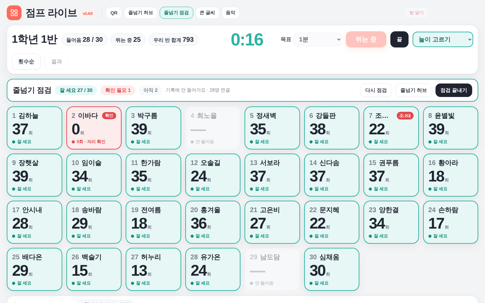
줄넘기 점검 판 — 초록은 잘 세는 칸, 빨강은 확인할 칸
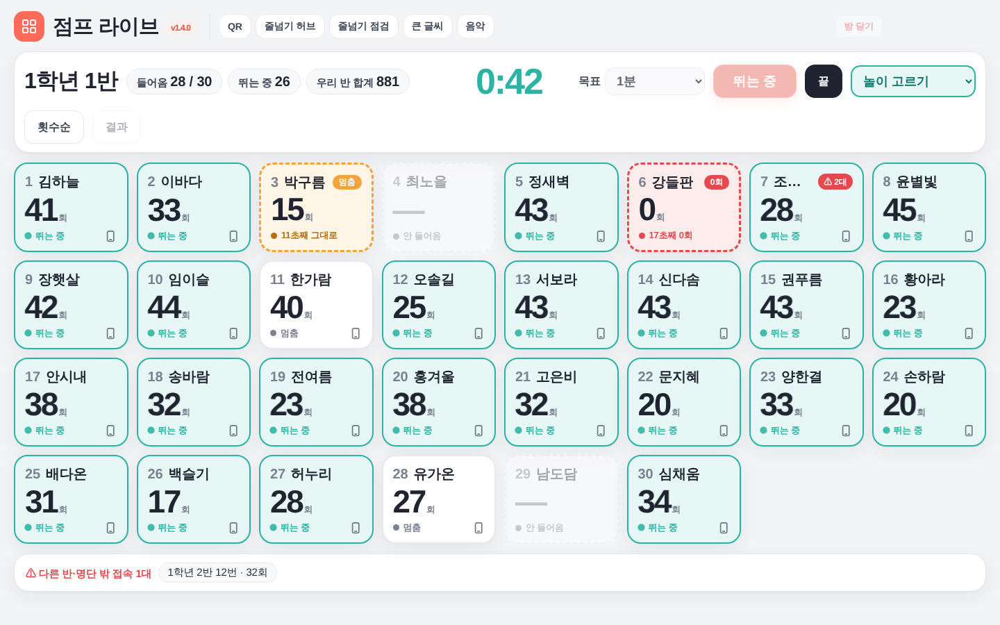
뛰는 중 멈춘 칸 — 주황 점선 멈춤, 빨강 점선 0회
스마트 줄넘기 허브 · 그 밖에
스마트 줄넘기 허브(USB)가 있으면 선생님 화면 위쪽 줄넘기 허브로 연결해 쓸 수 있어요. 이때 횟수는 학교 시트를 거치지 않아 거의 바로 들어와요.
허브 목록에서 안 쓰는 줄넘기는 빼기로 아래에 접어 두고, 뺄 때 전원도 끌 수 있어요. 다시 켜면 원래 학생에게 저절로 이어져요. 한 학생에게는 줄넘기 하나만 이어지고, 이름을 고르는 동안에는 목록이 다시 그려지지 않아요.
시작 신호를 못 받은 줄넘기에는 따로 다시 보내고(대답이 없으면 깨우기), 판 사이에는 줄넘기를 쉬게 해서 배터리를 아껴요. 30% 아래면 알려 줘요.
학생이 자기 기기에서 스마트 줄넘기를 블루투스로 이어 뛸 수도 있어요(안드로이드·크롬북·PC 크롬).
방은 6시간 뒤 저절로 닫히고, 기록 말고는 아무것도 남지 않아요.
④ 각자 기기로 대결 · 함께 뛰기 (학생 방)
선생님 없이도 학생끼리 방을 만들어 겨루거나 함께 뛸 수 있어요. 큰 화면 없이 모두 자기 판정기로 뛰고, 끝나면 모두의 화면에 같은 결과가 떠요.
학생이 기록 입력에서 각자 기기로 대결을 누르면 판정기가 방 만들기 창을 띄운 채로 열려요. (판정기 안의 각자 기기로 함께 뛰기 · 대결 버튼으로도 열 수 있어요)
한 명이 방식(다 같이 · 1대1 · 2대2)과 시간(30초 · 1분 · 2분)을 고르고 방 만들기 → 4자리 방 번호가 생겨요. 친구들은 자기 기기에서 그 번호를 넣고 들어가기.
2대2는 들어온 순서대로 주황팀·초록팀으로 나뉘고, 방장이 팀 섞기로 바꿀 수 있어요. 1대1은 두 명, 2대2는 네 명이 차야 시작할 수 있고, 꽉 찬 방에는 더 못 들어와요.
방장이 시작. 뛰는 동안 친구 숫자는 가렸다가 끝나고 한 번에 공개해요. 뛰는 중에는 중지로 멈출 수 있어요.
끝나면 1대1은 누가 이겼는지와 몇 회 차이, 2대2는 팀 합계와 한 명 한 명이 보탠 숫자, 다 같이는 순위와 합계가 떠요. 각자 기록은 승인 대기로 들어가요. 선생님은 기록 승인 화면에서 모두 승인으로 한꺼번에 처리하면 돼요.
나가기를 누르면 혼자 뛰기로 돌아가요. 방장이 나가면 방이 닫혀요.
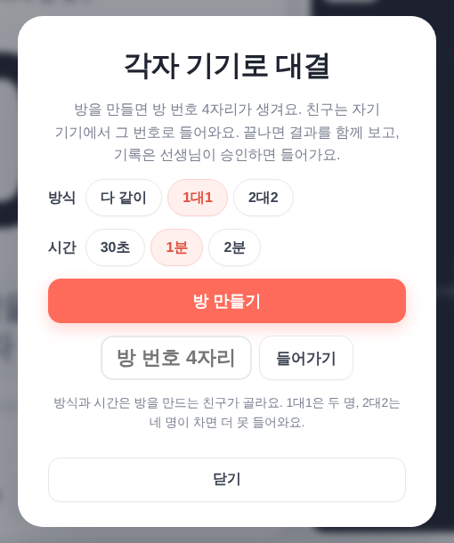
방식과 시간 고르기
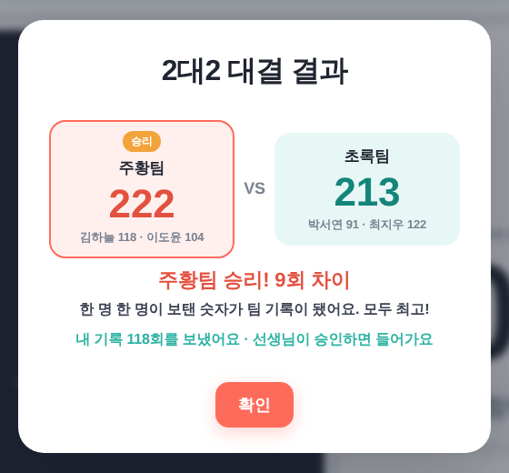
2대2 결과 — 팀 합계
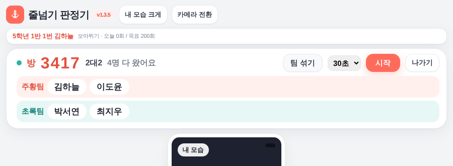
2대2 기다리기 — 주황팀·초록팀과 팀 섞기 (방장 화면)
학생 방은 앱의 카메라로 뛰기 · 각자 기기로 대결로 연 학생만 만들고 들어올 수 있어요. 주소만 아는 바깥 사람은 들어올 수 없습니다. 1대1·2대2 인원 제한은 껍데기 8판이 학교 시트에서 막아 주고, 7판 이하에서는 늦게 들어온 친구가 안내를 보고 스스로 나가요.
8. 학교 대결 · 도전장 게시판
다른 학교와 줄넘기로 겨뤄요. 전국 현황판에 참여하고 있어야 하고, 점프 Live로 겨루는 종목은 껍데기 6판 이상이 필요해요. 관리자 메뉴 → 학교 대결 탭에서 해요.
상대 학교 정하기
도전장 게시판: 아는 학교가 없어도 돼요. 종목·학년·인원·기한을 고르고, 정해진 한마디("누구든 환영해요!" 등)를 붙여 열린 도전장을 올리면 어느 학교든 받기를 눌러 대결을 시작해요. 한 학교가 걸어 둘 수 있는 도전장은 3개까지예요.
대결 코드: 아는 학교라면 도전장을 만들어 나온 6자리 코드와 초대 글(복사 단추)을 상대 선생님께 보내고, 상대는 같은 탭의 도전장 받기에 코드를 넣어요.
도전장을 만든 학교는 상대가 받기 전에도 먼저 뛰어 기록을 걸어 둘 수 있어요. 초대 글에 "이 기록을 넘어 보세요!"로 함께 들어가요.
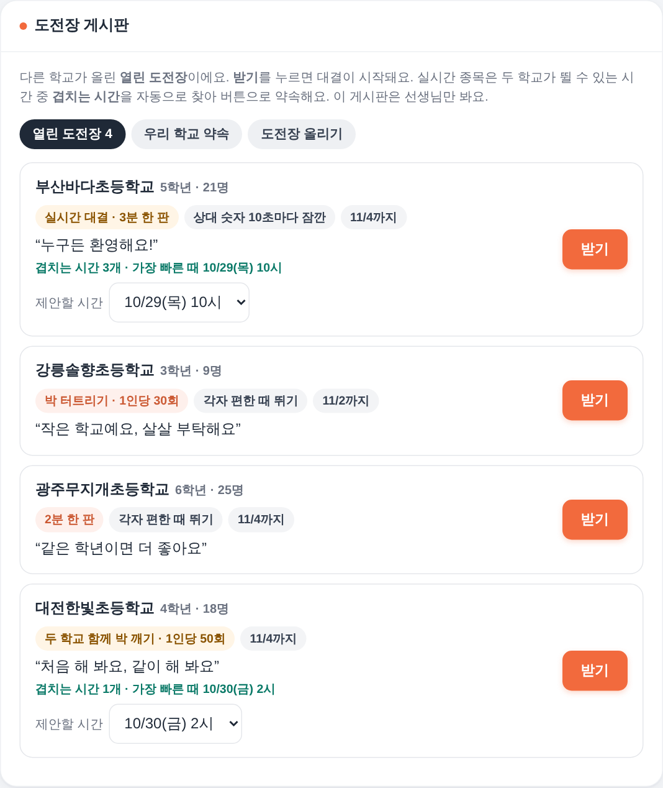
도전장 게시판 — 열린 도전장과 받기
종목
종목
겨루는 방법
점프 Live 1·2·3분 한 판
각자 편한 때 뛰고, 뛴 학생 1인당 평균으로. 대결 카드의 우리 학교 뛰기 →로 열면 시간이 맞춰져 있고, 결과 창의 대결 결과로 보내기로 끝
하루 동안 카메라로 뛴 횟수
기한 안에서 하루를 골라, 등록 학생 1인당 평균으로
박 터트리기 빨리 깨기
들어온 학생 수 × 30·50·100회짜리 박을 3분 안에 누가 더 빨리 깨나
실시간 대결
두 학교가 같은 시각에 점프 Live를 열고 한 판을 함께 뛰어요. 상대 숫자가 화면에 함께 떠요(바로바로 · 10·20초마다 · 끝나고 공개)
두 학교 함께 박 깨기
두 학교가 힘을 모아 큰 박 하나를 같이 깨요. 이기고 지는 것 없이 함께 해내는 종목
실시간 종목 약속 잡기
도전장을 올릴 때 우리 학교가 뛸 수 있는 시간(월~금 · 9·10·11·1·2시)을 표에서 고르면, 두 학교가 둘 다 되는 시간을 자동으로 찾아 줘요. 답은 글 대신 버튼(좋아요 · 준비됐어요 · 조금 늦어요 · 다른 시간 제안 · 이번엔 어려워요 · 고마워요)으로 주고받아요. 약속이 잡히면 학생 첫 화면에 대결 소식(D-day)이 뜨고, 약속한 시간에 점프 Live 열기를 누르면 그 대결 방으로 바로 이어져요.
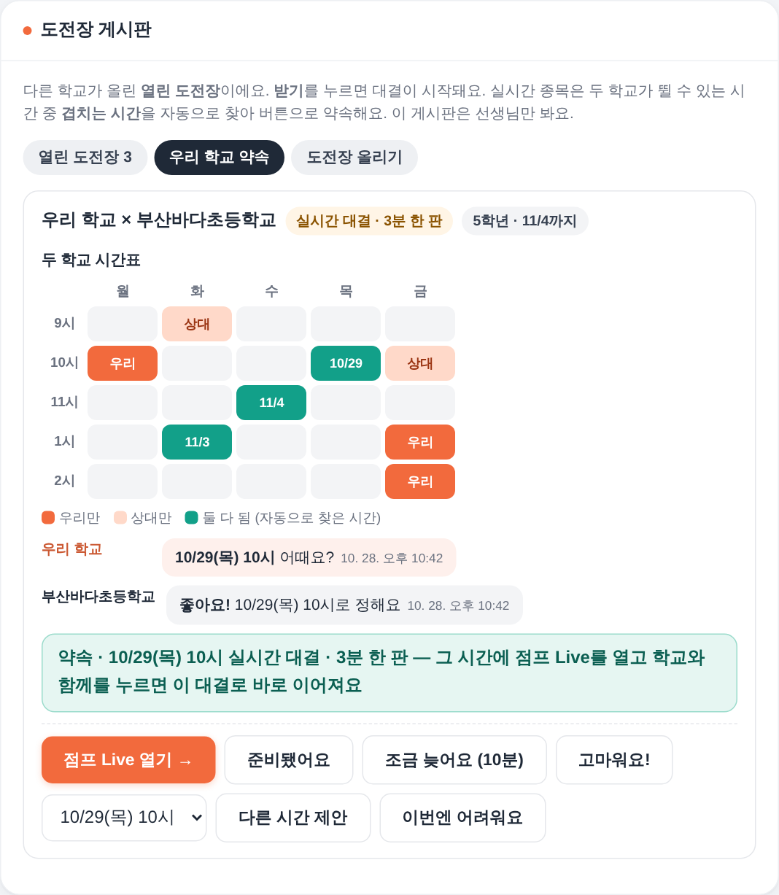
둘 다 되는 시간과 버튼으로 주고받은 약속
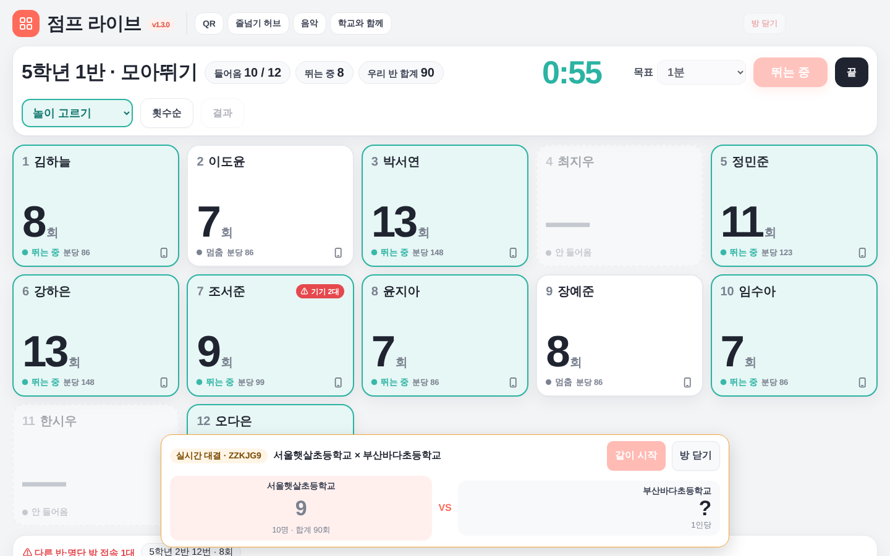
실시간 대결 — 상대 학교 숫자가 함께
결과는 두 학교만
점수와 승패는 대결한 두 학교의 관리자 메뉴에서만 보여요. 전국 현황판의 학교 대결 소식 칸에는 어느 두 학교가 어떤 종목으로 함께 뛰었는지만 올라가요. 대결 때 뛴 기록도 평소처럼 학생 기록으로 쌓여요.
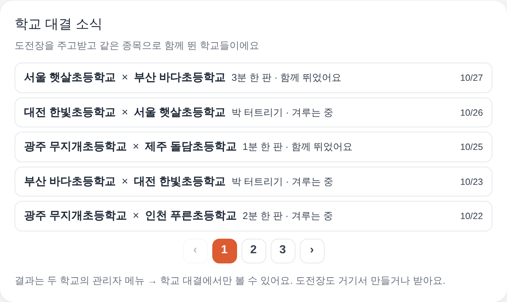
현황판의 학교 대결 소식 — 점수 없이 함께 뛴 소식만
9. 1.x 를 쓰던 학교에서 옮기기
학생과 기록은 같은 스프레드시트에 그대로 남습니다.
Apps Script 에서 Code.gs 내용을 Shell(껍데기).txt 내용으로 바꿔 붙여넣습니다.
Index, StudentPage, AdminPage, ApprovalPage, AdminLogin, Styles HTML 파일은 삭제해도 됩니다.
배포 → 배포 관리 → 수정(연필) → 버전: 새 버전 → 배포 (주소가 그대로 유지됩니다)
웹 앱 주소를 열고 프로그램 열기 → 즐겨찾기. 학생 QR은 관리자 메뉴의 새 QR로 한 번만 다시 알려 주세요.
이미 기록이 있는 학교는 승인 절차가 꺼진 상태로 이어집니다. 예전처럼 승인 후 반영하려면 기본 설정에서 켜세요. (전국 현황판에 참여하면 자동으로 켜져요)
10. 업데이트 · 껍데기 판
화면·기능: 자동. 할 일이 없습니다. 바뀐 내용은 관리자 메뉴 → 업데이트 내역(NEW 표시)에서 볼 수 있어요.
껍데기(Shell): 거의 바뀌지 않습니다. 새 기능은 되도록 화면 쪽에 넣고, 예전 껍데기에서도 조금 덜 되는 정도로 돌아가게 만들어요. 바꿔야 할 때는 업데이트 내역 탭에 안내가 뜹니다. 지금 껍데기는 8판이에요.
판
이 판부터 되는 것
3판
급수 인증, 학생을 지우면 기록도 함께 삭제
4판
전국 현황판 비밀 키를 학생 화면에 내보내지 않음
5판
스마트 줄넘기·카메라 판정기로 잰 한 번에 최고 연속, 전국 현황판 최고 연속 순위
6판
점프 Live (Lite), 학생 방(각자 기기로 대결), 학교 대결의 점프 Live 종목
7판
나와의 대결: 점프 Live 내 N분 최고를 학교 시트에 저장, 하루 최고·연속 최고 갱신 축하
8판
학생 방 1대1·2대2 인원 제한을 학교 시트가 막아 줌, 나간 친구 자리를 비움
바꾸는 법: Apps Script 의 Code.gs(또는 Shell.gs) 내용을 모두 지우고 Shell(껍데기).txt 를 붙여 넣고 저장 → 배포 → 배포 관리 → 수정(연필) → 버전: 새 버전 → 배포. 새 배포를 만들지 말고 기존 배포를 수정해야 학생용 주소가 그대로예요. 새로고침하면 업데이트 내역 탭 위쪽의 학교 껍데기 판이 8로 보여요.
새 기능을 미리 써 보려면 설치 확인 화면의 베타 열기를 이용하세요.
11. 자주 묻는 질문 · 문제 해결
증상
해결
배포·권한 허용 때 "오류 401: invalid_client"
견본 사본을 만든 직후에 생길 수 있어요(구글이 새 사본의 로그인 준비를 마치기 전). 몇 분 뒤 다시 배포하거나, Apps Script 편집기 위쪽에서 ping 을 골라 ▶ 실행 → 권한 허용을 먼저 한 뒤 배포하세요. 그래도 안 되면 시크릿 창(계정 하나만)에서 해 보세요.
"학교 시트에 연결하지 못했어요"
배포의 액세스 권한이 모든 사용자인지 확인 → 아니면 배포 관리에서 수정 후 새 버전으로 배포
관리자 비밀번호를 잊었어요
Apps Script 편집기 맨 아래에 function 비번초기화(){ setAdminPassword('1234'); } 를 붙여넣고 저장 → 위쪽 함수 목록에서 비번초기화를 골라 실행 → 비밀번호가 1234 로 돌아갑니다. 끝나면 붙여넣은 줄은 지워 주세요.
학생이 이름을 못 찾아요
학생 관리 탭에서 학년·반 값이 숫자로 똑같이 들어갔는지 확인 (예: 6 과 6학년 이 섞이면 따로 보임)
학기를 새로 시작하고 싶어요
비밀번호 · 초기화 탭 → 모든 기록 삭제 (명단은 남음). 미리 "파일 → 버전 기록"으로 백업하세요.
전국 현황판에 우리 학교가 안 보여요
참여 체크 후 저장했는지, 이번 달 기록이 있는지 확인 → 전국 현황판 탭의 지금 보내기. 현황판은 몇 분 단위로 새로 고쳐집니다.